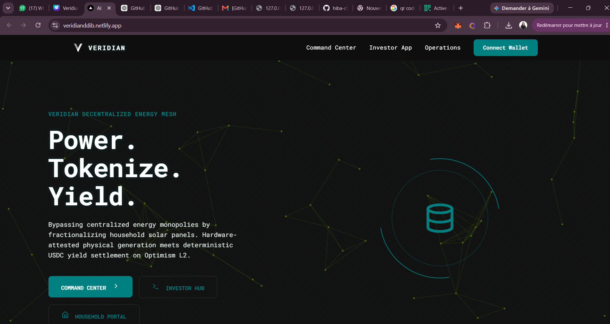
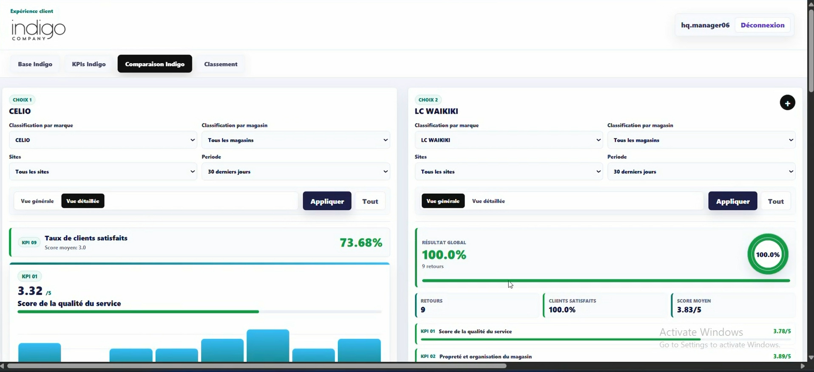
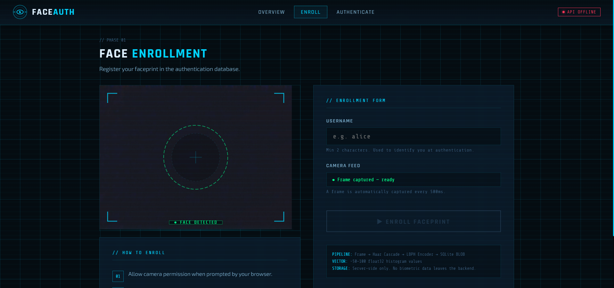
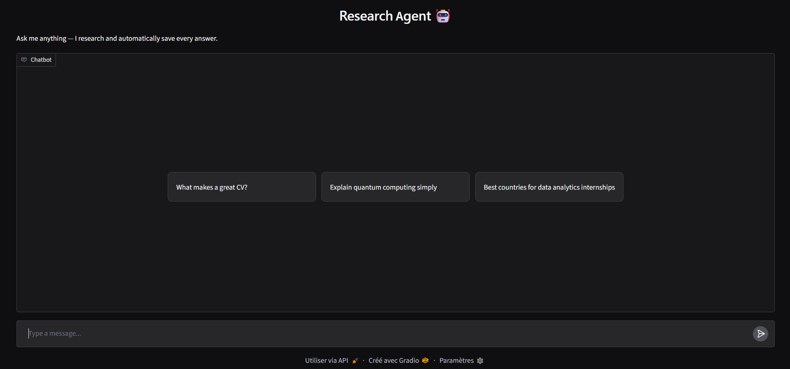

01 / BI & Data Analytics
MENA Solar Investment Analytics
Built an ETL pipeline processing 165,896 rows of MENA solar investment data across nearly six years, then developed Power BI dashboards to explore investment trends and market performance.
✓ Passionate about Strategy & Tech
Business Analytics & IT StudentA little about me
I'm a Business Analytics student at Tunis Business School, interested in how data and technology can help businesses make better decisions. I enjoy understanding the problem behind the numbers and connecting the dots between business needs, processes, and technical solutions.
My work spans business intelligence, data analytics, and product development, from building dashboards and KPI frameworks to translating business requirements into functional specifications and developing practical solutions. I'm particularly interested in the space where business and technology meet, and in making sure what gets built actually serves a purpose.
Beyond the technical side, I enjoy working across different perspectives, understanding how people approach problems, and bringing scattered ideas together into something people can actually use.
Selected work
A mix of analytics, business problem-solving, and technology.
01 / BI & Data Analytics
Built an ETL pipeline processing 165,896 rows of MENA solar investment data across nearly six years, then developed Power BI dashboards to explore investment trends and market performance.
02 / SQL & BI
Analyzing customer purchase patterns with SQL and Power BI, including category-level product rankings and customer behavior insights.

03 / UZH Deep Dive into Blockchain
An institutional platform concept for compliant real-world asset tokenization and automated escrow, developed during the University of Zurich's Deep Dive into Blockchain program. Awarded 1st place among 13 teams.

04 / Product & Business Analysis
Co-architected a customer feedback platform piloted across five stores, redesigned the feedback flow to cut completion time by over 80%, and presented the KPI dashboard to company leadership.

05 / Software & Cybersecurity
Developed a web-based facial authentication system with a face enrollment and verification workflow, connecting a browser interface to a server-side recognition pipeline.

06 / AI & Applied Automation
An AI agent project focused on streamlining research workflows. The project explores how to structure an agent workflow and handle practical implementation constraints.
What I work with
Power BI · DAX · SQL · PostgreSQL · Excel · ETL · Data Visualization
Python · Pandas · NumPy · Scikit-learn · XGBoost · LightGBM · R · JavaScript · C
Requirements Gathering · BRD/FSD · KPI Design · User Research · Market Analysis · Postman · Git · Temenos T24
Have a project in mind?
Interested in collaborating or connecting around business analytics, product, and technology? I'd love to hear from you.